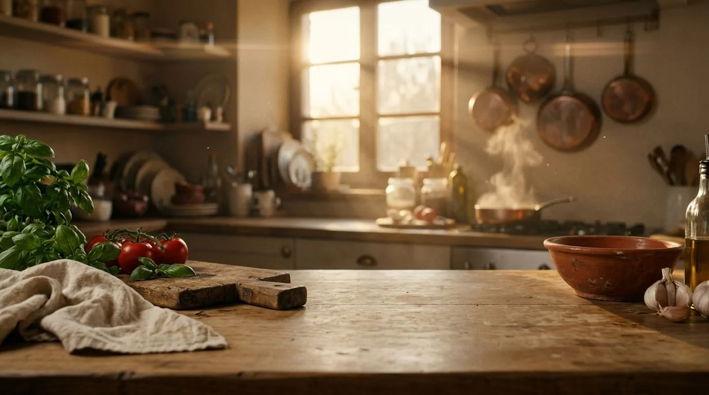
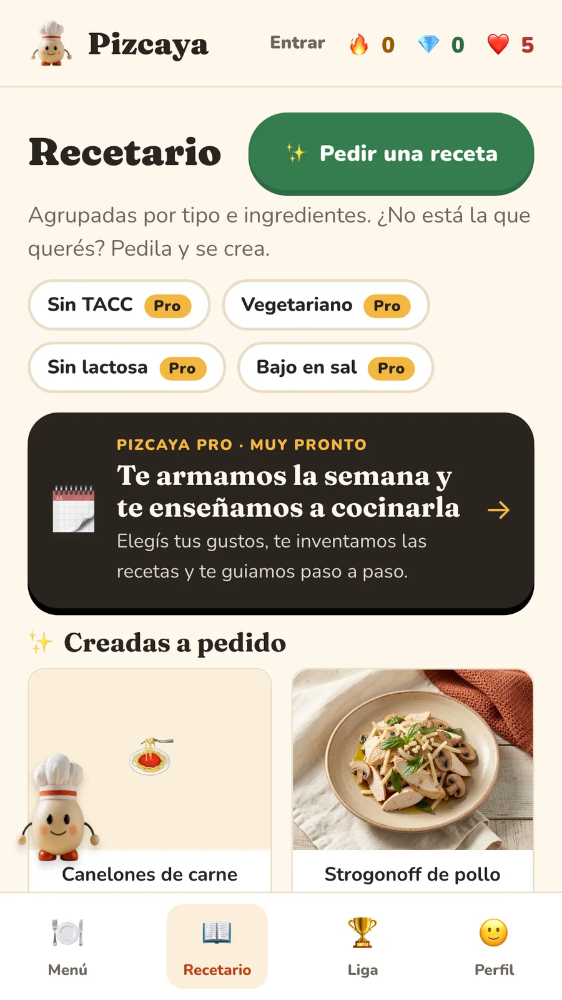
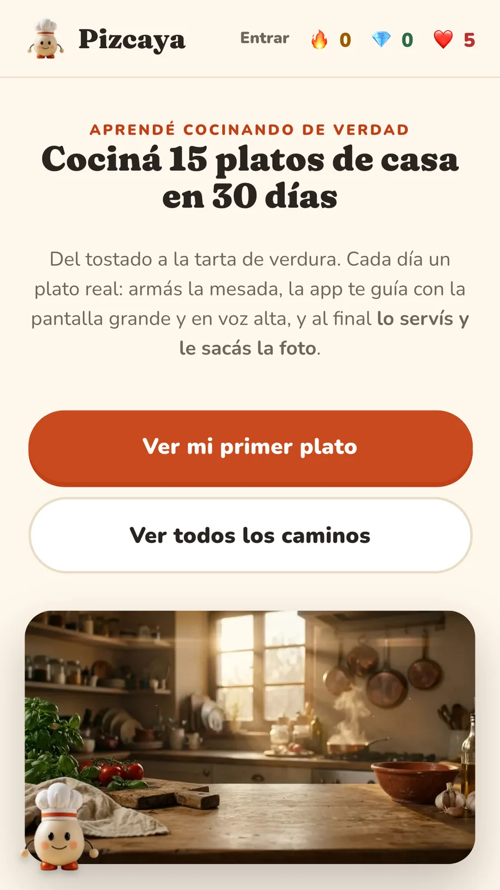

PIZCAYA
Uruguai · App web instalável e Android · Modo cozinha sem as mãos
EdTech · Culinária
Aulas curtas passo a passoModo cozinha com voz
Jogo, receitas e design systemHTML, CSS e JavaScript + Firebase
Voz do navegador · MediaPipe · IAEspanhol e inglês
Conforme o idioma do navegadorAPRENDER A COZINHAR SEM SUJAR A TELA: 15 PRATOS CASEIROS EM 30 DIAS
Pizcaya ensina a cozinhar pratos caseiros com aulas curtas, passo a passo, com imagens e voz. No modo cozinha o app lê cada passo em voz alta e avança quando você diz "pronto", assim você não encosta no celular com as mãos sujas.

Refogue a cebola em fogo médio por 10 minutos.
Mexa de vez em quando para não grudar. Quando ficar transparente, diga "pronto".
"Pronto"
- check_box 1 cebola Descascada
- check_box Óleo À mão
- check_box Sal À mão
Aulas curtas
Grave sua técnica

O que trava quem está começando a cozinhar
Tela touch na cozinha
Tocar a tela com as mãos molhadas, com óleo ou com farinha quebra o ritmo e suja o celular.
Vídeos longos
Vídeos longos obrigam a voltar para achar o passo e a lembrar listas de passos enquanto você está no fogão.
Ninguém diz se você acertou
Quem está começando não sabe se cortou bem ou se acertou a técnica, porque não tem ninguém do lado olhando.
Receitas para quem já sabe
Muitas receitas supõem que você já sabe cortar, refogar ou sovar. Primeiro é preciso aprender a técnica.
Os três pilares da Pizcaya
Modo cozinha sem as mãos
Passos grandes na tela, o app lê cada passo em voz alta e liga o timer quando o passo pede. Para avançar basta dizer "pronto".
Aulas curtas e técnicas
Três caminhos: cozinha básica, técnicas e receitas. Cada aula é curta e vai passo a passo, com imagens e voz. Você grava sua técnica e o app diz como se saiu, sem enviar o vídeo.
Receitas que crescem e jogo
Mais de 30 receitas passo a passo, organizadas por tipo e ingredientes. Se a que você procura não estiver lá, a inteligência artificial monta para você com a aula. Pontos, sequência, conquistas e uma liga semanal para manter o ânimo.
Telas do app

Receitas
Receitas passo a passo com fotos, agrupadas por tipo e ingredientes.

Monte sua bancada
Antes de começar, o app mostra tudo o que você precisa ter à mão.

15 pratos em 30 dias
Um prato de verdade por dia, do misto-quente perfeito à torta de legumes.

Progresso e liga
Pontos, sequência, conquistas e uma liga semanal para competir com outros cozinheiros.
PALQUEAR — CAMAROTES DE FUTEBOL
Projeto próprio. Veja este e os outros projetos.
A gente cria e constrói com você, da ideia ao app funcionando.